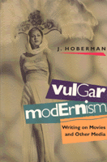

A witty collection of film criticism, including movie reviews, longer essays, and film-festival reports of the '80s
A witty collection of film criticism, including movie reviews, longer essays, and film-festival reports of the '80s


 A witty collection of film criticism, including movie reviews, longer essays, and film-festival reports of the '80s
A witty collection of film criticism, including movie reviews, longer essays, and film-festival reports of the '80s

|  |
Vulgar ModernismWriting on Movies and Other MediaJ. Hobermanpaper EAN: 978-0-87722-866-0 (ISBN: 0-87722-866-3) |
Nominated for the 1991 National Book Critics Circle Awards, 1991
"Nobody since Andrew Sarris and Pauline Kael has done more to deepen the way we think about films."
—The Nation
For the past dozen years, J. Hoberman has been publishing witty, impassioned, vivid film criticism in the pages of New York's alternative weekly, The Village Voice. His first collection includes a variety of these (mostly) movie reviews, as well as a number of longer essays and film-festival reports, all written during the 1980s. For Hoberman, film criticism is a form of social commentary, and his articles reflect a decade when an actor was president, the Vietnam War was refought on the nation's movie screens, and soundbites determined elections.
The variety of Hoberman's interests and the intellectual depth of his critiques are remarkable. Writing from the perspective of Lower Manhattan, he places movies in the context of the other visual arts—painting, photography, comics, video, and TV—as well as that of postmodem theorists such as Leslie Fiedler and Jean Baudrillard. Demonstrating the widest range of any American film critic writing today, Hoberman is equally at home discussing the work of Steven Spielberg and Andrei Tarkovsky, films by cutting-edge artists Raul Ruiz and Yvonne Rainer, and historical figures as disparate as Charles Chaplin and Andy Warhol.
Vulgar Modernism offers an entertaining, trenchant, informed, and informative view of the past decade's popular culture.
"This witty, erudite collection of reviews and longer essays is as much a commentary on the politics of the spectacle as it is a retrospective of the movies of the past dozen years."
—Village Voice
"One of the most intelligent an thought-provoking critics in the United States, though he doesn't always like my films."
—Martin Sorsese
"This is in the tradition of great American movie books—James Agee, Andrew Sarris, Manny Farber, Pauline Kael—in which an author's collected reviews have the emotional force of a recherché du temps perdu. Reliving the '80s with Hoberman, we can marvel at the weirdness and richness of world culture. Hoberman's writing offers impressive erudition, emotional intensity, and wiseguy wit. If Siegfried Kracauer and Patti Smith had bumped into each other on Second Avenue one night, maybe they could have produced a book like this."
—Marshall Berman, author of All That Is Solid Melts into Air: The Experience of Modernity
1. Introduction: Facing the Nineties
Part I: Mapping a Position, 1980-1982
2. Bad Movies
3. Three American Abstract Sensationalists
4. Vulgar Modernism
5. Veni, Vidi, Video...
6. Love & Death in the American Supermarketplace
Part II: Personalities and Oeuvres
7. The Star Who Fell to Earth
8. The Show Biz Messiah
9. The Good, the Bad, and the Ugly King
10. Martin Scorsese and the Comedy of Public Life
11. His Parsifal:Following the Syberbergenlied
12. Tarkovsky Arrives
13. Ritwik Ghatak: A Cloud-Capped Star
14. Hou Hsiao-hsien: The Edge of the World
15. Harold Rosenberg’s Magic Act
16. After the Gold Rush: Chaplin at One Hundred
Part III: Vanguards
17. The Super-80s
18. Paik’s Peak
19. Teen Angel
20. Once Upon a Time in Amerika: Straub/Huillet/Kafka
21. Show Time
22. What’s Art Got to Do with It?
23. Ghosts
24. The Purple Rose of Soho
25. “He-e-ere’s Jean-ee”: TV à la Godard
26. Pagan Rhapsodies
27. As the Third World Turns
28. Avant to Hold Your Hand
29. Fear and Trembling at the Whitney Biennial
30. Bon Voyeur: Andy Warhol’s Silver Screen
31. Raped and Abandoned: Yoko Ono’s Forgotten Masterpiece
32. Jacobs’ Ladder
33. Jack Smith, 1932-1989
Part IV: Reviews and Appreciations, 1984-1989
34. White Boys: Lucas, Spielberg, and the Temple of Dumb
35. All Shook Up
36. Stranger Than Paradise
37. Double is My Business
38. The End of Science Fiction
39. Ralph and Alice and Ed and Trixie
40. Shoah: The Being of Nothingness
41. Only Make Believe
42. Still Krazy after All These Years
43. Blue Velvet
44. At War with Ourselves
45. Full Metal Jacket: Dressed to Kill
46. The Other, Woman
47. Written on the Wind
48. London Burning
49. Divided City
50. Name That ’Toon
51. Hal Willner Plays Disney: Never Mind the Mouse Ears
52. Lost in America: Jean Baudrillard, Extraterrestrial
53. The Last Western
54. Suddenly, Last Summer
55. Street Scene
56. New York Film Festival: Societies of the Spectacle
57. Brave New Image World
58. Noh Exit
59. The Worst Years of Our Lives
Part V: Trips
60. Two Weeks in Another Town: India and its Film Festival
61. Havana 1983
62. Tokyo 1985
63. Budapest 1986
64. What’s Stranger than Paradise? Or How We Stopped Worrying and Learned to Love the ’Burbs
65. The Last Picture Show
Index
J. Hoberman, film critic for The Village Voice, is the author of a forthcoming history of Yiddish cinema and the co-author (with Jonathan Rosenbaum) of Midnight Movies.
General Interest
Cinema Studies
Culture and the Moving Image, edited by Robert Sklar.
The Culture and the Moving Image series, edited by Robert Sklar, seeks to publish innovative scholarship and criticism on cinema, television, and the culture of the moving image. The series will emphasize works that view these media in their broad cultural and social frameworks. Its themes will include a global perspective on the world-wide production of images; the links between film, television, and video art; a concern with issues of race, class, and gender; and an engagement with the growing convergence of history and theory in moving image studies.
© 2015 Temple University. All Rights Reserved. This page: http://www.temple.edu/tempress/titles/840_reg.html.